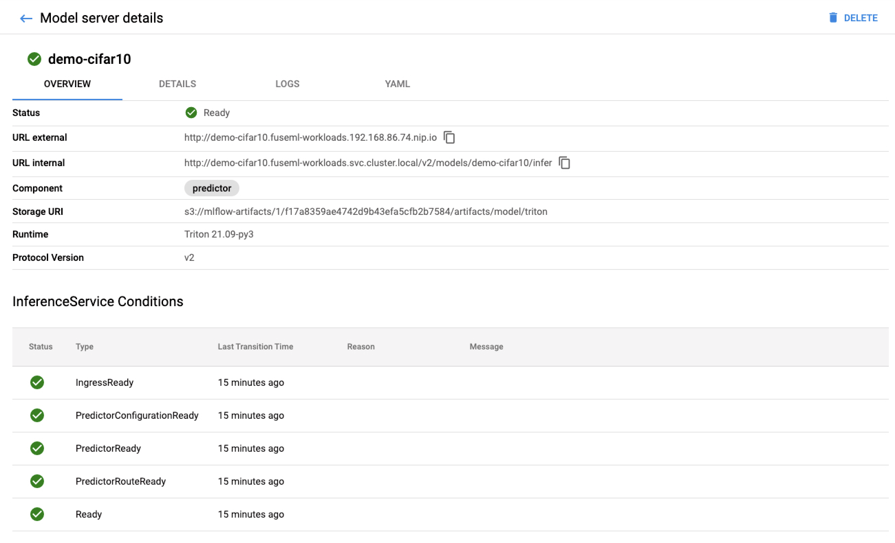

Training and Serving ML Models on GPU with NVIDIA Triton
Introduction
Data scientists or machine learning engineers who looks to train models at scale with good performance eventually hit a point where they start to experience various degrees of slowness on the process. For example, tasks that usually were taking minutes to complete are now taking hours, or even days when datasets get larger. Such situation is particularly common when training Deep Learning models, for neural networks the training phase is the most resource-intensive task. While training, a neural network takes in inputs which are then processed in hidden layers using weights that are adjusted during training and the model then outputs a prediction. Weights are adjusted to find patterns in order to make better predictions. Both operations are essentially composed by matrix multiplications.
Taking in consideration a neural network with around 10, 100 or even 100,000 parameters, a computer would still be able to handle this in a matter of minutes, or even hours at the most. However a neural network with more than 10 billion parameter would probably take years to train on the same system.
To overcome that problem GPUs (Graphics Processing Units) are usually used for training neural networks. GPUs are optimized for training artificial intelligence and deep learning models as they can process multiple computations simultaneously. Additionally, GPUs have their own dedicated memory which allows it to compute huge amounts of data with higher bandwidth resulting in the training phase being much faster.
In this tutorial, we will explore how to use FuseML together with NVIDIA Triton Inference Server to not only train a neural network, but also serve it in a timely manner by taking advantage of the GPU. We will start by using k3d to create a local kubernetes cluster with two nodes exposing the the GPU to one of them. After that, we will install FuseML then create and execute a workflow that trains the model and then serves it, as a validation step we will not be using the GPU yet. Once the model is validated, we will improve its accuracy by increasing number of epochs used when training the model, by doing that it is expected that the training time would increase considerably, however as the training will be performed on GPU it will be rather quick.
Setup
Create the Kubernetes Cluster
In order to run FuseML locally, we will be using k3d. K3d is a lightweight wrapper to run k3s (Rancher Lab’s minimal Kubernetes distribution) in docker making it very easy to create single and multi-node k3s clusters. The Kubernetes nodes created by k3d are docker containers running k3s with containerd, in that way, we need to be able to run GPU accelerated Docker containers so that it can expose the GPU to containerd. Besides, we also need to build a custom k3s image that also contains the NVIDIA Container Runtime and configures containerd to use that runtime.
Running GPU accelerated Docker containers
We need to install nvidia-docker be able to run GPU accelerated docker containers. Before getting started, ensure that the following requirements are met by your system:
- GNU/Linux x86_64 with kernel version > 3.10
- Docker >= 19.03 (recommended, but some distributions may include older versions of Docker. The minimum supported version is 1.12)
- NVIDIA GPU with Architecture >= Kepler (or compute capability 3.0). You can check you GPU architecture at CUDA Wikipedia
- NVIDIA Linux drivers >= 418.81.07 (Note that older driver releases or branches are unsupported.)
Installing NVIDIA Docker
The instructions provided here are for OpenSUSE Leap 15.3. For other supported distributions please refer to the nvidia-docker official documentation.
- Install the NVIDIA driver:
The recommended way to install drivers is to use the package manager for your distribution, however as the driver from the package manager did not work properly for OpenSUSE, we will be using the driver from the NVIDIA website. We will be installing the NVIDIA driver version 470.74, you might need to check for the latest available driver compatible with your GPU.
Installing the driver:
wget https://us.download.nvidia.com/XFree86/Linux-x86_64/470.74/NVIDIA-Linux-x86_64-470.74.run
chmod +x NVIDIA-Linux-x86_64-470.74.run.
./NVIDIA-Linux-x86_64-470.74.run
After installing the driver make sure to reboot your system.
- Install Docker:
Run the following command to install Docker:
sudo zypper install -y docker
- Add your user to the docker group.
sudo usermod -aG docker $USER
Log out and log back in so that your group membership is re-evaluated.
- Ensure Docker service is running and test your Docker installation by running the hello-world container and checking its output:
$ sudo systemctl --now enable docker
$ docker run --rm hello-world
Unable to find image 'hello-world:latest' locally
latest: Pulling from library/hello-world
2db29710123e: Pull complete
Digest: sha256:37a0b92b08d4919615c3ee023f7ddb068d12b8387475d64c622ac30f45c29c51
Status: Downloaded newer image for hello-world:latest
Hello from Docker!
This message shows that your installation appears to be working correctly.
To generate this message, Docker took the following steps:
1. The Docker client contacted the Docker daemon.
2. The Docker daemon pulled the "hello-world" image from the Docker Hub.
(amd64)
3. The Docker daemon created a new container from that image which runs the
executable that produces the output you are currently reading.
4. The Docker daemon streamed that output to the Docker client, which sent it
to your terminal.
To try something more ambitious, you can run an Ubuntu container with:
$ docker run -it ubuntu bash
Share images, automate workflows, and more with a free Docker ID:
https://hub.docker.com/
For more examples and ideas, visit:
https://docs.docker.com/get-started/
- Install nvidia-docker:
The nvidia-docker package is available through a nvidia repository provided for for OpenSUSE Leap 15.1, however it also works for OpenSUSE Leap 15.3. Add the repository and install it by running the following commands:
sudo zypper ar -f https://nvidia.github.io/nvidia-docker/opensuse-leap15.1/nvidia-docker.repo
sudo zypper install nvidia-docker2
When installing nvidia-docker it will overwrite the /etc/docker/daemon.json file by configuring docker to use the NVIDIA
container runtime. Make sure that it has the following contents:
$ cat /etc/docker/daemon.json
{
"runtimes": {
"nvidia": {
"path": "nvidia-container-runtime",
"runtimeArgs": []
}
}
}
- Restart the Docker daemon to complete the installation and test it by running a CUDA container:
$ sudo systemctl restart docker
$ docker run --rm --gpus all nvidia/cuda:11.0-base nvidia-smi
Fri Oct 15 13:13:50 2021
+-----------------------------------------------------------------------------+
| NVIDIA-SMI 470.74 Driver Version: 470.74 CUDA Version: 11.4 |
|-------------------------------+----------------------+----------------------+
| GPU Name Persistence-M| Bus-Id Disp.A | Volatile Uncorr. ECC |
| Fan Temp Perf Pwr:Usage/Cap| Memory-Usage | GPU-Util Compute M. |
| | | MIG M. |
|===============================+======================+======================|
| 0 NVIDIA GeForce ... Off | 00000000:01:00.0 Off | N/A |
| 0% 43C P5 24W / 280W | 0MiB / 11175MiB | 2% Default |
| | | N/A |
+-------------------------------+----------------------+----------------------+
+-----------------------------------------------------------------------------+
| Processes: |
| GPU GI CI PID Type Process name GPU Memory |
| ID ID Usage |
|=============================================================================|
| No running processes found |
+-----------------------------------------------------------------------------+
Build a custom K3s image
The native K3s image is based on Alpine which is not supported by the NVIDIA container runtime. To get around that we need to build the image using a supported base image. The following instructions are based on the official k3d documentation
- Create a Dockerfile with the content below:
ARG K3S_TAG="v1.21.5-k3s1"
ARG CUDA_VERSION="11.4"
FROM rancher/k3s:$K3S_TAG as k3s
FROM nvidia/cuda:${CUDA_VERSION}.0-base-ubuntu20.04
RUN echo 'debconf debconf/frontend select Noninteractive' | debconf-set-selections
RUN apt-get update && \
apt-get -y install gnupg2 curl
# Install NVIDIA Container Runtime
RUN curl -s -L https://nvidia.github.io/nvidia-container-runtime/gpgkey | apt-key add -
RUN curl -s -L https://nvidia.github.io/nvidia-container-runtime/ubuntu20.04/nvidia-container-runtime.list | tee /etc/apt/sources.list.d/nvidia-container-runtime.list
RUN apt-get update && \
apt-get -y install nvidia-container-runtime
COPY --from=k3s /bin /bin/
RUN mkdir -p /etc && \
echo 'hosts: files dns' > /etc/nsswitch.conf
RUN chmod 1777 /tmp
# Provide custom containerd configuration to configure the nvidia-container-runtime
RUN mkdir -p /var/lib/rancher/k3s/agent/etc/containerd/
COPY config.toml.tmpl /var/lib/rancher/k3s/agent/etc/containerd/config.toml.tmpl
# Deploy the nvidia driver plugin on startup
RUN mkdir -p /var/lib/rancher/k3s/server/manifests
COPY device-plugin-daemonset.yaml /var/lib/rancher/k3s/server/manifests/nvidia-device-plugin-daemonset.yaml
VOLUME /var/lib/kubelet
VOLUME /var/lib/rancher/k3s
VOLUME /var/lib/cni
VOLUME /var/log
ENV PATH="$PATH:/bin/aux"
ENTRYPOINT ["/bin/k3s"]
CMD ["agent"]
This Dockerfile uses nvidia/cuda as base image and installs the NVIDIA container runtime on it, adds a configuration file for containerd setting it to use the NVIDIA container runtime and adds the NVIDIA device plugin daemonset so it can start automatically when creating the cluster.
- In the same directory, create the containerd configuration file, named
config.toml.tmplwith the following content:
[plugins.opt]
path = "{{ .NodeConfig.Containerd.Opt }}"
[plugins.cri]
stream_server_address = "127.0.0.1"
stream_server_port = "10010"
{{- if .IsRunningInUserNS }}
disable_cgroup = true
disable_apparmor = true
restrict_oom_score_adj = true
{{end}}
{{- if .NodeConfig.AgentConfig.PauseImage }}
sandbox_image = "{{ .NodeConfig.AgentConfig.PauseImage }}"
{{end}}
{{- if not .NodeConfig.NoFlannel }}
[plugins.cri.cni]
bin_dir = "{{ .NodeConfig.AgentConfig.CNIBinDir }}"
conf_dir = "{{ .NodeConfig.AgentConfig.CNIConfDir }}"
{{end}}
[plugins.cri.containerd.runtimes.runc]
# ---- changed from 'io.containerd.runc.v2' for GPU support
runtime_type = "io.containerd.runtime.v1.linux"
# ---- added for GPU support
[plugins.linux]
runtime = "nvidia-container-runtime"
{{ if .PrivateRegistryConfig }}
{{ if .PrivateRegistryConfig.Mirrors }}
[plugins.cri.registry.mirrors]{{end}}
{{range $k, $v := .PrivateRegistryConfig.Mirrors }}
[plugins.cri.registry.mirrors."{{$k}}"]
endpoint = [{{range $i, $j := $v.Endpoints}}{{if $i}}, {{end}}{{printf "%q" .}}{{end}}]
{{end}}
{{range $k, $v := .PrivateRegistryConfig.Configs }}
{{ if $v.Auth }}
[plugins.cri.registry.configs."{{$k}}".auth]
{{ if $v.Auth.Username }}username = "{{ $v.Auth.Username }}"{{end}}
{{ if $v.Auth.Password }}password = "{{ $v.Auth.Password }}"{{end}}
{{ if $v.Auth.Auth }}auth = "{{ $v.Auth.Auth }}"{{end}}
{{ if $v.Auth.IdentityToken }}identitytoken = "{{ $v.Auth.IdentityToken }}"{{end}}
{{end}}
{{ if $v.TLS }}
[plugins.cri.registry.configs."{{$k}}".tls]
{{ if $v.TLS.CAFile }}ca_file = "{{ $v.TLS.CAFile }}"{{end}}
{{ if $v.TLS.CertFile }}cert_file = "{{ $v.TLS.CertFile }}"{{end}}
{{ if $v.TLS.KeyFile }}key_file = "{{ $v.TLS.KeyFile }}"{{end}}
{{end}}
{{end}}
{{end}}
- Finally, create the
device-plugin-daemonset.yamlfile with the following content.
apiVersion: apps/v1
kind: DaemonSet
metadata:
name: nvidia-device-plugin-daemonset
namespace: kube-system
spec:
selector:
matchLabels:
name: nvidia-device-plugin-ds
updateStrategy:
type: RollingUpdate
template:
metadata:
annotations:
scheduler.alpha.kubernetes.io/critical-pod: ""
labels:
name: nvidia-device-plugin-ds
spec:
tolerations:
- key: CriticalAddonsOnly
operator: Exists
- key: nvidia.com/gpu
operator: Exists
effect: NoSchedule
nodeSelector:
accelerator: gpu
priorityClassName: "system-node-critical"
containers:
- image: nvidia/k8s-device-plugin:1.0.0-beta4
name: nvidia-device-plugin-ctr
securityContext:
allowPrivilegeEscalation: false
capabilities:
drop: ["ALL"]
volumeMounts:
- name: device-plugin
mountPath: /var/lib/kubelet/device-plugins
volumes:
- name: device-plugin
hostPath:
path: /var/lib/kubelet/device-plugins
Note that the daemonset definition includes a nodeSelector to ensure that it is only scheduled on
nodes with the accelerator=gpu label. The NVIDIA device plugin is a daemonset that exposes the number
of GPUs available on the nodes, keep track of the GPUs health and enable running GPU enabled containers.
- With all those files on the same directory, build the image running the following command:
docker build . -t k3s:v1.21.5-k3s1-cuda --build-arg CUDA_VERSION=X.X
Replace X.X with the latest cuda version supported by your GPU which can be found by running the following
command:
nvidia-smi | awk '/CUDA/ { print $9 }'
- Test the image built by running the following commands to create a cluster and deploy a test pod:
k3d cluster create gputest --image=k3s:v1.21.5-k3s1-cuda --gpus=1 --k3s-node-label "accelerator=gpu@server:0"
cat <<EOF | kubectl apply -f -
apiVersion: v1
kind: Pod
metadata:
name: cuda-vector-add
spec:
restartPolicy: OnFailure
containers:
- name: cuda-vector-add
image: "k8s.gcr.io/cuda-vector-add:v0.1"
resources:
limits:
nvidia.com/gpu: 1
EOF
Wait for the pod to finish running and check its logs, it should output something like:
$ kubectl logs cuda-vector-add
[Vector addition of 50000 elements]
Copy input data from the host memory to the CUDA device
CUDA kernel launch with 196 blocks of 256 threads
Copy output data from the CUDA device to the host memory
Test PASSED
Done
If the pod is stuck in Pending state, check the logs from the pod created by NVIDIA device
plugin daemonset. If it succeeds you can delete the test cluster by running the following
command:
k3d cluster delete gputest
Create the Kubernetes cluster
Run the following command to create a cluster with 2 nodes where one of them is labeled with
accelerator=gpu,we also disable traefik and expose the http port to allow accessing the
dashboards from FuseML extensions:
k3d cluster create fuseml --image=k3s:v1.21.5-k3s1-cuda --gpus=1 --agents 2 --k3s-node-label 'accelerator=gpu@agent:0' --k3s-arg '--disable=traefik@server:0' -p '80:80@loadbalancer'
Install FuseML
-
Get the fuseml-installer:
$ curl -sfL https://raw.githubusercontent.com/fuseml/fuseml/main/install.sh | bash Verifying checksum... Done. Preparing to install fuseml-installer into /usr/local/bin fuseml-installer installed into /usr/local/bin/fuseml-installer Run 'fuseml-installer --help' to see what you can do with it.Make sure you have
kubectlandhelminstalled. If not, refer to the following links to install them:- kubectl: https://kubernetes.io/docs/tasks/tools/install-kubectl-linux/
- helm: https://helm.sh/docs/intro/install/
-
To install FuseML run the following command, note that we are also installing the mlflow and kserve extensions which will be used for model tracking and serving respectively:
```bash fuseml-installer install --extensions mlflow,kserve ``` !!! note FuseML will automatically assign a domain based on the cluster load balancer IP address in the format `<LB_IP>.nip.io`. If you want to use a different domain, you can use the `--system-domain` flag. In the rest of this tutorial we will use `192.168.86.74.nip.io` as the domain. Any reference to `<FUSEML_DOMAIN>` should be replaced by your domain.
Training & Serving the model
As GPU is usually a limited and costly resource, instead of testing/developing the model using a GPU it might make sense to validate the model first on CPU with a minimum training configuration (small dataset, small number of epochs, batch size, etc). To do that we will run a FuseML workflow that will train the model and serve it on CPU. This will also enable us to compare CPU and GPU performance during the training.
For that experiment we will be training a Convolutional Neural Network (CNN) to classify CIFAR images using the Keras Sequential API. The complete code for model training is available here.
Training & Serving using FuseML
The following steps describe how to use FuseML to train the model and serve it.
- Clone the
fuseml/examplesrepository and register thekerasexample code as a FuseML codeset:
$ git clone https://github.com/fuseml/examples.git
$ fuseml codeset register -n cifar10 -p demo examples/codesets/mlflow/keras
Pushing the code to the git repository...
Codeset http://gitea.192.168.86.74.nip.io/demo/cifar10.git successfully registered
- Create a FuseML workflow:
$ fuseml workflow create examples/workflows/mlflow-e2e.yaml
Workflow "mlflow-e2e" successfully created
This workflow includes steps for training and serving the model. When serving Keras models, unless
predictor is set to a specific value instead of auto on the workflow, FuseML will automatically
serve the model using NVIDIA Triton Inference Server.
Note: Alternatively, you could use different example workflow, like examples/workflows/mlflow-seldon-triton-e2e.yaml.
This one also uses NVIDIA Triton Inference Server, but with the help of Seldon Core instead of Kserve.
- Assign the
mlflow-e2eworkflow to thecifar10codeset:
$ fuseml workflow assign -c cifar10 -p demo -n mlflow-e2e
Workflow "mlflow-e2e" assigned to codeset "demo/cifar10"
- Wait for the workflow run to finish running:
By assigning the workflow to the codeset, a workflow run will be created. You can check the status of the workflow run by running the following command:
$ fuseml workflow list-runs
+---------------------------+------------+----------------+----------+---------+
| NAME | WORKFLOW | STARTED | DURATION | STATUS |
+---------------------------+------------+----------------+----------+---------+
| fuseml-demo-cifar10-tkgls | mlflow-e2e | 14 seconds ago | --- | Running |
+---------------------------+------------+----------------+----------+---------+
You can also see a more detailed view of the workflow run through the tekton dashboard, which should
be available at: http://tekton.<FUSEML_DOMAIN>
Note that since this is the first time the workflow is running, it will build a docker image including the dependencies for training the model which may take a while. However, consecutive runs will skip that step as long as the dependencies are kept the same.
Validating the Deployed Model
Before querying the served model for predictions, lets take a look at MLflow for detailed information about the model, such as its accuracy, loss, training parameters, etc.
MLflow should be available at http://mlflow.<FUSEML_DOMAIN>.
For example:
Note the accuracy (about 70%) and the training duration (about 4 minutes) for 10 epochs.
With the successful execution of the workflow, a new FuseML application should have been created. List the FuseML applications:
$ fuseml application list
+--------------+-----------+----------------------------------------------+----------------------------------------------------------------------------------------+------------+
| NAME | TYPE | DESCRIPTION | URL | WORKFLOW |
+--------------+-----------+----------------------------------------------+----------------------------------------------------------------------------------------+------------+
| demo-cifar10 | predictor | Application generated by mlflow-e2e workflow | http://demo-cifar10.fuseml-workloads.192.168.86.74.nip.io/v2/models/demo-cifar10/infer | mlflow-e2e |
+--------------+-----------+----------------------------------------------+----------------------------------------------------------------------------------------+------------+
The list of FuseML applications include a URL to query the model for predictions. As FuseML is using the
KServe extension for serving the model, you can check the deployed models through the KServe
dashboard (http://kserve-web-app.<FUSEML_DOMAIN>/) which also includes more detailed
information such as the status of the deployment, logs, etc.
For example:

To validate the model, we need to send a request containing an image so the model can to predict its class.
The json file included in the fuseml/examples repository contains a sample request that represents the
following deer image:
Run the following command to send the request to the application URL:
$ curl -sX POST http://demo-cifar10.fuseml-workloads.192.168.86.74.nip.io/v2/models/demo-cifar10/infer -d @examples/prediction/data-keras.json | jq
{
"model_name": "demo-cifar10",
"model_version": "1",
"outputs": [
{
"name": "dense_1",
"datatype": "FP32",
"shape": [
1,
10
],
"data": [
-2.26723575592041,
-7.539040565490723,
1.4853938817977905,
1.297321081161499,
4.158736705780029,
2.9821133613586426,
-2.7044689655303955,
3.2879271507263184,
-5.1592817306518555,
-4.101395130157471
]
}
]
}
To be able to interpret the predictions, we need to know the classes indexes meaning. The following is how the classes are indexed:
0: 'airplane'
1: 'automobile'
2: 'bird'
3: 'cat'
4: 'deer'
5: 'dog'
6: 'frog'
7: 'horse'
8: 'ship'
9: 'truck'
With that information, we can see that the model correctly predicted that the image is a deer (higher number on index 4).
Benchmark the Inference Service
To be able to compare the performance of the model serving on CPU, we can benchmark the inference service.
Run the following command to create a Job workload that will benchmark the inference service:
kubectl create -f https://raw.githubusercontent.com/fuseml/docs/main/docs/tutorials/img/kserve-triton-gpu/perf.yaml
Wait for the Job to complete and check the logs for the results:
$ kubectl wait --for=condition=complete --timeout 70s job -l app=triton-load-test && kubectl logs -l app=triton-load-test
Requests [total, rate, throughput] 36000, 600.02, 599.83
Duration [total, attack, wait] 1m0s, 59.998s, 18.336ms
Latencies [min, mean, 50, 90, 95, 99, max] 3.328ms, 15.91ms, 7.209ms, 26.135ms, 54.551ms, 205.604ms, 307.993ms
Bytes In [total, mean] 11088000, 308.00
Bytes Out [total, mean] 5208264000, 144674.00
Success [ratio] 100.00%
Status Codes [code:count] 200:36000
Error Set:
With the benchmark results we can then continue to deploy the model to the GPU, and compare its performance.
Training & Serving on GPU
Now that the model is validated, we can proceed to train and serve the model with higher accuracy on GPU.
Training & Serving on GPU with FuseML
- Update the example workflow so that it will train and serve the model on GPU:
Open the file examples/workflows/mlflow-e2e.yaml with your favorite text editor and make the
following changes:
- Change the workflow name to
mlflow-e2e-gpu. -
Add the following snippet under the
trainerstep:- name: "trainer" ... resources: limits: nvidia.com/gpu: 1This will ensure that the trainer pod will be scheduled to a node that has a GPU.
-
For the
predictorstep, we need to add the following input:- name: predictor ... inputs: ... - name: resources_limits value: '{nvidia.com/gpu: 1}'This ensures that the workload (KServe inference service) created by this step will be scheduled to a node that has a GPU.
-
Unassign the
mlflow-e2eworkflow from thecifar10, as we do not want to run the same workflow again:
$ fuseml workflow unassign -c cifar10 -p demo -n mlflow-e2e
Workflow "mlflow-e2e" unassigned from codeset "demo/cifar10"
- Increase the number of epochs on the
kerasexample codeset to 60, so we get model with higher accuracy:
$ sed -i 's/10/60/' examples/codesets/mlflow/keras/MLproject
$ fuseml codeset register -n cifar10 -p demo examples/codesets/mlflow/keras
Pushing the code to the git repository...
Codeset http://gitea.192.168.86.74.nip.io/demo/cifar10.git successfully registered
- Create the
mlflow-e2e-gpuworkflow and assign it to thecifar10codeset:
$ fuseml workflow create examples/workflows/mlflow-e2e.yaml
Workflow "mlflow-e2e-gpu" successfully created
$ fuseml workflow assign -c cifar10 -p demo -n mlflow-e2e-gpu
Workflow "mlflow-e2e-gpu" assigned to codeset "demo/cifar10"
- Wait for the workflow run to finish running:
You can check the status of the workflow run by running the following command:
$ fuseml workflow list-runs
+---------------------------+----------------+----------------+------------+-----------+
| NAME | WORKFLOW | STARTED | DURATION | STATUS |
+---------------------------+----------------+----------------+------------+-----------+
| fuseml-demo-cifar10-pld47 | mlflow-e2e-gpu | 8 seconds ago | --- | Running |
| fuseml-demo-cifar10-tkgls | mlflow-e2e | 23 minutes ago | 12 minutes | Succeeded |
+---------------------------+----------------+----------------+------------+-----------+
If you head to the tekton dashboard (http://tekton.<FUSEML_DOMAIN>) and look at the logs for the
trainer step, you should be able to see a log confirming that the training is being performed on GPU,
such as:
Num GPUs: 1
1 Physical GPUs, 1 Logical GPUs
Validating the Deployed model on GPU
Now that we have the model trained, head over to MLflow (http://mlflow.<FUSEML_DOMAIN>) to compare the
training metrics.
For example:
With the increased number of epochs, we can see that the trained model have reached an accuracy of 96% while spending the same amount of time on training!
MLflow also allows comparing other metrics by selecting both runs and clicking on the Compare button.
List the FuseML applications:
$ fuseml application list
+--------------+-----------+--------------------------------------------------+----------------------------------------------------------------------------------------+----------------+
| NAME | TYPE | DESCRIPTION | URL | WORKFLOW |
+--------------+-----------+--------------------------------------------------+----------------------------------------------------------------------------------------+----------------+
| demo-cifar10 | predictor | Application generated by mlflow-e2e-gpu workflow | http://demo-cifar10.fuseml-workloads.192.168.86.74.nip.io/v2/models/demo-cifar10/infer | mlflow-e2e-gpu |
+--------------+-----------+--------------------------------------------------+----------------------------------------------------------------------------------------+----------------+
Note that we have the same application, but now it is using the new model and is also using the GPU.
To confirm that, check the inference service logs at
http://kserve-web-app.<FUSEML_DOMAIN>/details/fuseml-workloads/demo-cifar10,
it should have something like:
I1019 12:58:00.349814 1 metrics.cc:290] Collecting metrics for GPU 0: NVIDIA XXX
Now, just like before, send a request to the application URL.
$ curl -sX POST http://demo-cifar10.fuseml-workloads.192.168.86.74.nip.io/v2/models/demo-cifar10/infer -d @examples/prediction/data-keras.json | jq
{
"model_name": "demo-cifar10",
"model_version": "1",
"outputs": [
{
"name": "dense_1",
"datatype": "FP32",
"shape": [
1,
10
],
"data": [
-9.919892311096191,
-17.90753936767578,
4.234504699707031,
2.73684024810791,
15.640728950500488,
4.6014084815979,
-1.7354743480682373,
10.520237922668457,
-6.34201717376709,
-10.711426734924316
]
}
]
}
Once again we can confirm that the model correctly predicted that the image is a deer (higher number on index 4).
Benchmark the Inference Service on GPU
We can now benchmark the inference service running which uses the GPU to compute predictions.
Run the following command again to benchmark the inference service, you can ignore the (AlreadyExists error):
kubectl create -f https://raw.githubusercontent.com/fuseml/docs/main/docs/tutorials/img/kserve-triton-gpu/perf.yaml
Wait for the Job to complete and check the logs for the results:
$ kubectl wait --for=condition=complete --timeout 70s job -l app=triton-load-test && kubectl logs -l app=triton-load-test
Requests [total, rate, throughput] 36000, 600.02, 599.99
Duration [total, attack, wait] 1m0s, 59.998s, 2.35ms
Latencies [min, mean, 50, 90, 95, 99, max] 1.974ms, 3.086ms, 2.697ms, 3.542ms, 4.762ms, 10.532ms, 72.138ms (1)
Bytes In [total, mean] 11052000, 307.00
Bytes Out [total, mean] 5208264000, 144674.00
Success [ratio] 100.00%
Status Codes [code:count] 200:36000
Error Set:
Requests [total, rate, throughput] 36000, 600.02, 599.83
Duration [total, attack, wait] 1m0s, 59.998s, 18.336ms
Latencies [min, mean, 50, 90, 95, 99, max] 3.328ms, 15.91ms, 7.209ms, 26.135ms, 54.551ms, 205.604ms, 307.993ms (2)
Bytes In [total, mean] 11088000, 308.00
Bytes Out [total, mean] 5208264000, 144674.00
Success [ratio] 100.00%
Status Codes [code:count] 200:36000
Error Set:
The output from the above command shows the benchmark results for the inference service running on GPU (1). And also the results from the previous run when the model was being served using only the CPU (2).
The interesting results are displayed by the Latency metrics. The latency results for the inference service
running on GPU (1) are much lower than the latency results for the inference service running on CPU (2).
Cleanup
Delete the cluster by running the following command:
k3d cluster delete fuseml
The docker containers created by k3d will be deleted together with all workloads.
Conclusion
In this tutorial we have demonstrated how FuseML can be used to validate, train and serve ML models on GPU. Additionally, we have demonstrated the use of GPU for inference and training models quicker. Although the model used in this tutorial is not complex, meaning that it could have been trained without GPU, it is a good example that enabled us to see how using a GPU can speed up the training process.